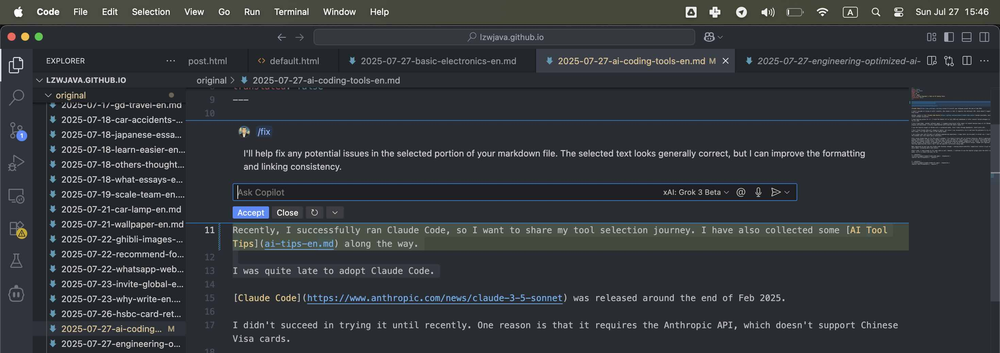

LLMコスト、エージェント、およびコーディングツール | オリジナル、AI翻訳
目次
- LLM APIコストの最適化
- 最初はコスト効率の良いモデルから始める
- 不要なハイエンドモデルの使用を避ける
- 単純なタスクにはNLPライブラリを優先
- 効率化のために特化エージェントを構築
- テストを通じてモデルを比較
- DeepseekとMistralのAPI使用状況
- DeepSeekはキャッシュミスでコストが変動
- Mistralの費用は出力トークンが支配的
- Grokの価格設定は入力トークンに有利
- タスクの複雑さでトークン使用量が変化
- 価格は公開レートに準拠
- 汎用エージェント vs 特化エージェント
- 汎用エージェントは複雑さに弱い
- 特化エージェントは特定分野で優れる
- ワークフローツールは柔軟性に限界
- カスタムPythonエージェントで制御性向上
- 利便性と機能性のトレードオフ
- エンジニア視点のAIコーディングツール考察
- ブランドより実用性を重視
- VSCode + Copilotの安定性を評価
- Claude Codeの差分表示が印象的
- 文法ツールは手動検証が必要
- 盲目的採用より実験を優先
LLM APIコストの最適化
2025.08

出典: openrouter.ai

出典: openrouter.ai
トークン使用量を最適化する際は、まずコスト効率の高いモデルから始めることを推奨します。問題が発生した場合にのみ、より高機能なモデルに切り替えましょう。Mistral、Gemini Flash、DeepSeekは一般的に経済的ですが、Claude Sonnetは高価になりがちです。以下のルーター表示におけるClaude Codeの利用方法を理解することが重要です。
最近、私はこの原則を無視して高額なコストを支払う経験をしました。最大使用量を確認するために無理に利用していましたが、これは合理的なアプローチではなく単純な計算ミスです。例えば、本当にSonnet 4が必要か？必ずしもそうではありません。Anthropicの先進モデルでOpenRouterで高評価ですが、Sonnet 4と3.5の違いは明確に理解できていません。
Replit創業者Amjad Masadのインタビューから学んだことは、多くのタスクでは高度なモデルが不要だということです。理想はLLM APIを完全に回避することですが、HanLPのようなNLPライブラリは中国語処理などの単純タスクに効果的です。
さらに、最初から効率的に処理するカスタムエージェントを開発できます。Claude Codeが常に最適解とは限りません。モデル間の差異を理解するには、実際に使用して比較するのが有効です。Gemini 2.5 Flashを利用したところ、Sonnet 4よりも能力が劣ると感じました。
数日後、以下の設定を活用しています。longContextThresholdパラメータが重要で、Claude Code使用時には定期的にコンソールをクリアするか再起動すると良いでしょう。コーディング時にはロングコンテキスト閾値に達しやすいです。
{
"PROXY_URL": "http://127.0.0.1:7890",
"LOG": true,
"Providers": [
{
"name": "openrouter",
"api_base_url": "https://openrouter.ai/api/v1/chat/completions",
"api_key": "",
"models": [
"moonshotai/kimi-k2",
"anthropic/claude-sonnet-4",
"anthropic/claude-3.5-sonnet",
"anthropic/claude-3.7-sonnet:thinking",
"anthropic/claude-opus-4",
"google/gemini-2.5-flash",
"google/gemini-2.5-pro",
"deepseek/deepseek-chat-v3-0324",
"deepseek/deepseek-chat-v3.1",
"deepseek/deepseek-r1",
"mistralai/mistral-medium-3.1",
"qwen/qwen3-coder",
"openai/gpt-oss-120b",
"openai/gpt-5",
"openai/gpt-5-mini",
"x-ai/grok-3-mini"
],
"transformer": {
"use": [
"openrouter"
]
}
}
],
"Router": {
"default": "openrouter,openai/gpt-5-mini",
"background": "openrouter,google/gemini-2.5-flash",
"think": "openrouter,qwen/qwen3-coder",
"longContext": "openrouter,deepseek/deepseek-chat-v3.1",
"longContextThreshold": 2000,
"webSearch": "openrouter,mistralai/mistral-medium-3.1"
}
}
汎用エージェント vs 特化エージェント
2025.08
Manusは汎用AIエージェントツールと謳われていますが、実際には十分に機能しないでしょう。
速度が遅く、不要な処理が多いため非効率的です。また、複雑な問題や弱点に直面するとタスク失敗の可能性が高まります。
特化エージェントは特定のタスクに最適化されているため優れています。SpringのようなWeb開発フレームワークやVue/Reactなど数十のデータベース/フレームワークが存在します。
DifyはAIによるワークフロー接続に重点を置き、ドラッグ&コネクト方式で定義します。情報・データ・プラットフォーム間の連携に多くの作業が必要です。
私もPythonコードリファクタリングエージェントや文法修正エージェントなどシンプルなエージェントを構築しました。コードは柔軟性が高く、Difyがカバーできる範囲は限定的です。
ManusはVNC方式で処理内容を表示しますが、コードやテキストのアップロードが必要で不便です。DifyはMIT Scratchのようなビジュアルプログラミングに似ています。
教育用のScratchがPythonほど普及しないのと同じく、Difyにも制約があります。Manusは単純タスクを処理できますが、弱点に触れると失敗します。
プログラマーとしては、Pythonで垂直型エージェントを構築するのが最適です。プロンプトとコンテキストを設定することでLLM APIの出力を安定させられます。
ManusやDifyもLLM APIを使用していますが、既存ツールの利便性はあります。Twitterボット構築なら、Difyがオープンソース技術より便利かもしれません。
エンジニア視点のAIコーディングツール考察
2025.08
最近Claude Codeの実行に成功したので、ツール選定の経緯を共有します。AI Tool Tipsも収集しました。
Claude Codeの採用は遅れました。Claude Codeは2025年2月末にリリースされましたが、中国のVisaカード非対応やClaude Code Routerの登場まで試せませんでした。
Gemini CLIは2025年7月に試みましたが、コード修正に失敗し断念。AiderやCursorも使用しましたが、VSCodeプラグインの不具合やElectronベースの課題からCopilotに回帰しました。
現在はOpenRouter経由のGrok 3 betaをカスタム設定したVSCodeのCopilotプラグインを使用しています。Claude Codeは習慣を変えませんが、差分表示(git diff風)による編集確認の簡便さは高く評価しています。ただし文法修正ツールは自動化の目的に反して手動確認が必要な点が課題です。
数日間の使用で、Claude Codeのコード修正能力には感銘を受けました。

出典: 自作スクリーンショット

出典: 自作スクリーンショット

出典: 自作スクリーンショット
DeepseekとMistralのAPI使用状況
2025.01.25
DeepSeek
1ヶ月で1,500万トークン使用し約23.5CNYの費用が発生しました。1日あたりの使用状況:
| タイプ | トークン |
|---|---|
| 入力(キャッシュヒット) | 946,816 |
| 入力(キャッシュミス) | 2,753,752 |
| 出力 | 3,100,977 |
計算式:
0.94 * 0.1 + 2.75 * 1 + 3.10 * 2 = 11.83
タスクによって入力(キャッシュミス)と出力がコストを左右します。DeepSeek API料金と一致する結果です。

出典: 自作スクリーンショット
Mistral
料金体系:
| モデル | 入力(100万トークンあたりUSD) | 出力(100万トークンあたりUSD) |
|---|---|---|
mistral-large-2411 |
2 | 6 |
mistral-small-latest |
0.2 | 0.6 |
1日あたりの使用状況(モデル: mistral-large-2411):
| タイプ | トークン | コスト(USD) |
|---|---|---|
| 合計 | 772,284 | 3.44 |
| 出力 | 474,855 | 2.85 |
| 入力 | 297,429 | 0.59 |
mistral-small-2409モデルでは1,022,407トークン使用。入力340,802トークン、出力681,605トークンと仮定すると、総コストは0.48USD。コンソール表示の0.43USDとほぼ一致します。
Grok
| モデル | 入力(100万トークンあたりUSD) | 出力(100万トークンあたりUSD) |
|---|---|---|
grok-2-latest |
2 | 10 |